这篇论文的英文缩写和领域名词密度很高。下面按"直觉优先"的方式解释每个核心术语——不是查字典式的定义，而是在这篇论文的语境下它到底指什么。
| 缩写/术语 | 全称 | 论文里的直觉 |
|---|---|---|
| QEP | Query Execution Plan（查询执行计划） | 就是优化器最终输出的一棵 join tree。它描述了"先 join 哪两张表、用什么 join 方法（hash/nested-loop/merge）、再和谁 join"的完整执行方案。可以把它想象成一道菜谱：不是数据本身，而是烹饪步骤。论文中有时也用 plan 简称。 |
| quantifier | — | 论文对"查询里的一张表（或 range variable）"的称呼。如果你写 FROM A, B, C，那 A、B、C 各是一个 quantifier。之所以不直接用 "table"，是因为同一个物理表可能以不同别名出现多次。 |
| quantifier set （简称 QS） |
— | 一组 quantifier 的集合。例如 {A, B, C} 表示"已经 join 了 A、B、C 这三张表"的状态。QEP 的"进度"就是用它覆盖了哪些 quantifier 来描述的：一个覆盖了 {A, B, C} 的计划，和你尚未 join 的 D、E 之间能不能发生下一步 join。 |
| MEMO | — | 优化器的内存数据结构，按 quantifier set 组织。你可以把它想象成一个巨大的查找表：key = quantifier set，value = 这个 set 上所有还没被淘汰的 QEP 列表。例如 MEMO[{A,B}] 存的是"覆盖了表 A 和 B 的所有候选 join 方案"。DP 的过程就是从小到大不断往 MEMO 里填新 entry。 |
| plan partition （记作 \(P_k\)） |
— | MEMO 中所有 quantifier set size = k 的 entry 的集合。例如 \(P_2\) 就是所有两表 join 方案的总和。论文把 MEMO 水平切成 \(P_1, P_2, \ldots, P_N\)，每一层就是 DP 的一个"进度层"。构造 \(P_4\)（所有四表 join）的原材料来自更小的 \(P_1, P_2, P_3\)。 |
| Plan Relation | — | 论文把整个 MEMO 抽象成一张关系表：PlanRelation(QS, PlanList)——两列，一列是 quantifier set，一列是候选计划列表。这个抽象的意义是：接下来就可以用数据库里 join 执行的技术（分区、嵌套循环、索引跳跃）来处理"构造更大量词集计划"这个任务。 |
| candidate pair | — | 一对来自两个更小 plan partition 的 QEP，例如 \(P_1\) 里的一条和 \(P_3\) 里的一条。DP 枚举器把它们拿出来，检查是否能拼成一个新的、覆盖更多表的计划。绝大多数 candidate pair 会因为重叠或不相连而被丢弃；少数通过检查的才会真正触发计划生成。 |
| disjoint filter | — | 检查两边的 quantifier set 是否没有交集。如果左边已经用了表 A，右边也用了表 A，就不能拼——因为 A 不能在 join tree 里出现两次。这是论文优化的核心目标：大多数 candidate pair 都死在这一关，而大部分检查又是白费的。 |
| connectivity filter | — | 检查两边之间是否至少存在一条 join predicate。如果两边没有连接边，拼出来的计划就包含 Cartesian product（叉积），在禁用叉积的设置下会被丢弃。 |
| CreateJoinPlans | — | 真正昂贵的操作：给定两个通过 filter 的子计划，枚举所有可能的 join 方式（左右交换、不同 join 算法等），调用 cost model 估算代价，产生一批新的候选 QEP。论文衡量"真实工作量"的指标就是各线程调用了多少次 CreateJoinPlans。 |
| PrunePlans | — | 把新生成的 QEP 和 MEMO 里同一 quantifier set 上已有的 QEP 比较，淘汰代价更高的。这是 DP 保留最优子结构的核心操作。 |
| MPJ | Multiple Plan Join | 论文的核心抽象：把"构造 \(P_S\)"重新解释为"在几个更小的 plan partition 之间做 join"。例如构造 \(P_4\) 就是执行 \(P_1 \Join P_3\) 和 \(P_2 \Join P_2\)，其中 join condition 就是 disjoint + connectivity 两个 filter。一旦接受这个视角，并行化就变成了"怎么给这些 join 分配线程"。 |
| SVA | Skip Vector Array | 一个类似跳表（skip list）的辅助索引结构，建在每个 plan partition 上。它的作用是：当发现当前 candidate pair 在某个 quantifier 上重叠时，直接告诉你"可以跳到 partition 里的第几行"，从而跳过一整段必然重叠的候选，而不是一个一个检查。对 star query 效果最明显。 |
| SVJ | Skip Vector Join | 配合 SVA 的 join 算法。核心逻辑分两路：如果当前 pair disjoint → 走正常 join 流程；如果 overlap → 用两侧的 skip vector 同时跳，跳过一整片重叠区间。 |
| SSDV | Search Space Description Vector | 一个描述"哪个线程负责哪段搜索空间"的数据结构。你不用记住它的内部字段；只需知道它是线程分配工作时的"任务单"——告诉线程：你处理 outer partition 的第几行到第几行，inner partition 的第几行到第几行。 |
| polyadic DP | — | 指 DP 的每一步需要两个（或更多）子问题的结果来构造当前问题的解。join enumeration 是典型的 polyadic：一个新计划由两个较小的子计划 join 而成。对比：Fibonacci 是 monadic——每一项只依赖前一项。 |
| non-serial DP | — | 指大小为 k 的子问题不只依赖固定前几层（如 k−1 和 k−2），而是可能依赖所有更小的 size。构造 \(P_5\) 需要 \(P_1\) 和 \(P_4\)、\(P_2\) 和 \(P_3\)——所有组合都要考虑。这让通用的 pipeline-parallel DP 方法无法直接套用。 |
| search space | — | 在本文中特指构造某一层 \(P_S\) 时需要检查的所有 candidate pair 的总和。不是"所有可能的 join order 的宇宙"，而是"当前这一层 DP 要枚举的组合范围"。 |
| stratum | — | 论文里和"plan join stratum"连用，指构造 \(P_S\) 时的一组同构 join：例如 \(P_1 \Join P_3\) 是一个 stratum，\(P_2 \Join P_2\) 是另一个 stratum。不同 stratum 的有效 pair 密度可能差异巨大，这是负载偏斜的一个来源。 |
VLDB 2008 Parallel Optimizer Dynamic Programming
如果把本仓库里的 join order 材料串起来，这篇论文的位置很清楚：
| 材料 | 它主要解决什么 | VLDB 2008 接着问什么 |
|---|---|---|
| System R / Serial DP | 如何 bottom-up 枚举 join order，并用 principle of optimality 保留最优子计划。 | 既然 DP 能保证最优，能不能利用多核让它在更大查询上仍然可用？ |
| Ono & Lohman / join enumeration complexity | 定量刻画 join enumeration 的复杂度和 query graph topology 的影响。 | 不同 topology 下，线程分配的真实工作量为什么会偏斜？ |
| DPccp / DPhyp | 从图结构出发，只生成 disjoint 且 connected 的 candidate pair，减少无效枚举。 | 如果保留工业优化器常见的 generate-and-filter DP，能不能通过索引和并行把无效检查压下去？ |
| MPDP SIGMOD 2022 | 在少枚举和高并行之间重新设计候选 Join-Pair 生成方式，并把 GPU 纳入考虑。 | VLDB 2008 是更早的一条路线：先把 DP 的执行组织变成 parallel MPJ，再用 SVA 减少 disjoint filter。 |
| Query Simplification / heuristic search | 在超大查询上用约束、启发式或 shortest path 规约减少搜索。 | VLDB 2008 不牺牲搜索空间完整性：它的目标是同一 DP search space 下更快地找到最优计划。 |
我的一句话总结是：
这篇论文真正做的事，是把 “join enumeration” 重新解释成 MEMO 表上的一系列自连接。一旦接受这个视角，并行化就不再是粗暴地给 DP loop 加线程，而是一个查询处理问题：怎么切 join space、怎么负载均衡、怎么跳过无效 pair。
这个视角也解释了论文为什么一边讨论 dynamic programming，一边大量使用 join、partition、block nested-loop、index、selectivity 这些关系执行术语。作者没有把 optimizer 当作神秘黑盒，而是把 optimizer 内部的枚举过程当成一个可被优化的查询处理 workload。
论文作者来自 Kyungpook National University 和 IBM Almaden Research Center。这个组合很能解释论文风格：它既有并行算法和负载均衡分析，也始终围绕工业优化器里的 MEMO、filter、plan node、PostgreSQL prototype 与 DB2-like optimizer 叙事。
| 作者 | 论文署名机构 | 在这篇论文里的角色信号 |
|---|---|---|
| Wook-Shin Han | Kyungpook National University | 第一作者。论文主体围绕 DP join enumeration 并行化、SVA 数据结构和 PostgreSQL 原型展开。 |
| Wooseong Kwak / Jinsoo Lee | Kyungpook National University | 共同作者，参与并行枚举算法、拓扑分析和实验实现。 |
| Guy M. Lohman | IBM Almaden Research Center | DB2 优化器和 query optimization 领域的重要研究者。论文中的 MEMO、quantifier set、generate-and-filter DP 叙事明显贴近工业优化器。 |
| Volker Markl | IBM Almaden Research Center | 与 progressive optimization、robust query processing 等工作相关。论文也特别提到 parallel optimizer 可加速 POP 和 index advisor 这类重复调用 optimizer 的工具。 |
所以读这篇论文时，不宜只看“8 线程加速多少”。更重要的是看它如何把优化器里一个传统串行核心拆成可调度、可索引、可 profile 的执行单元。
论文开篇先承认 DP optimizer 的价值：它能枚举大量候选 QEP（Query Execution Plan，查询执行计划——就是优化器最终输出的 join tree），估计代价，选择最低代价计划；通过 bottom-up 构造和 pruning，可以避免许多冗余子计划。问题是 join 表数一多，候选计划数在最坏情况下指数增长。对于超过 20 张表的真实 workload，例如文中提到的 Siebel 查询，传统 DP 的优化时间可能已经不可接受，甚至会超过执行时间。
已有路线是 randomized 或 heuristic search：iterative improvement、simulated annealing、genetic algorithm、greedy 等。它们可以减少优化时间，但代价是可能错过最优计划。论文的立场很鲜明：如果坏计划执行时间比省下来的优化时间多几个数量级，那么这种交换未必划算。
这在 2008 年尤其自然：处理器性能提升开始更多来自 multi-core，而不是单核频率继续上升。商业数据库早就支持 parallel query execution，但 query optimization 本身仍多为串行。于是作者问：能不能把多核也用在 optimization 阶段，改善单个复杂查询的 response time，而不仅仅是把额外 core 分给其他并发查询提高吞吐？
难点在于，join enumeration 里的 DP 属于 non-serial polyadic DP：
| 术语 | 直觉 | 为什么难并行 |
|---|---|---|
| polyadic | 一个新子计划由两个更小子计划组合而成。 | 每个 candidate 都要从两个输入 plan partition 里配对，不是单链式递推。 |
| non-serial | 大小为 \(S\) 的子问题依赖所有更小 size 的组合，而不只是固定前一两层。 | 通用 parallel DP 方法不能直接套用；pipeline parallelism 也很难得到线性加速。 |
原文列出的贡献可以压缩成五点：
这一节复述传统 serial DP。论文使用 quantifier 表示查询中的表或 range variable。一个 QEP（查询执行计划）可以用它已经访问并 join 的 quantifier set 表征——也就是说，看这个计划覆盖了哪些表，就知道它"做到哪一步了"。MEMO 表按 quantifier set 存储计划列表，每个 entry 保存同一 quantifier set 上尚未被 prune 的 QEP。
Serial DP 的主循环很像下面这样：
for S = 2..N:
for smallSZ = 1..floor(S/2):
largeSZ = S - smallSZ
for each smallQS in PsmallSZ:
for each largeQS in PlargeSZ:
if smallQS overlaps largeQS:
continue
if smallQS not connected to largeQS:
continue
plans = CreateJoinPlans(Memo[smallQS], Memo[largeQS])
PrunePlans(Memo[smallQS union largeQS], plans)这里最容易误解的是 overlaps。它不是说两个子计划“语义相关”，而是说两个 quantifier set 有交集。比如现在 query graph 是一个 star：
B
|
C - A - D
join predicates: A-B, A-C, A-D假设已经算出了：
P1 = { A, B, C, D }
P2 = { AB, AC, AD }
P3 = { ABC, ABD, ACD }现在要构造 \(P_4 = ABCD\)。Serial DP 会尝试两类 plan join（每一对就是一个 candidate pair——来自两个更小 partition 的候选组合）：
P1 x P3:
(A, ABC), (A, ABD), (A, ACD)
(B, ABC), (B, ABD), (B, ACD)
(C, ABC), (C, ABD), (C, ACD)
(D, ABC), (D, ABD), (D, ACD)
P2 x P2:
(AB, AB), (AB, AC), (AB, AD)
(AC, AB), (AC, AC), (AC, AD)
(AD, AB), (AD, AC), (AD, AD)其中 (A, ABC) 要被 disjoint filter 丢掉，因为左边包含 A，右边也包含 A：
{A} ∩ {A,B,C} = {A} // overlap, invalid如果不丢掉，它就等价于把“已经包含 A 的计划 ABC”再和“A 的计划”join 一次，A 这张表会在同一个 join tree 里出现两遍。这不是构造 \(ABCD\) 的合法子步骤。
同理，(AB, AC) 也要丢掉：
{A,B} ∩ {A,C} = {A} // overlap, invalid它看起来像是在把两个有用的中间结果拼起来，但两个中间结果都已经消耗了 A。DP 的每一步 join 必须把两个互不相交的 relation set 拼成更大的 relation set；否则就不是“覆盖更多表”，而是在重复使用同一张表。
反过来，(B, ACD) 不 overlap：
{B} ∩ {A,C,D} = ∅ // disjoint
{B} -- {A,C,D} // connected by join predicate A-B所以它能通过两个 filter，并调用 CreateJoinPlans 生成形如 \(B \Join (A \Join C \Join D)\) 的候选计划。
再看一个只通过 disjoint、但会被 connectivity filter 丢掉的例子。若枚举器看到了 (B, CD)：
{B} ∩ {C,D} = ∅ // disjoint
B 与 {C,D} 之间没有 join predicate // disconnected这个 pair 没有重叠，但两边之间也没有连接边；在不允许 Cartesian product 的设置下，它会被 connectivity filter 丢掉。
| 候选 pair | Disjoint? | Connected? | 结果 |
|---|---|---|---|
(A, ABC) |
否，交集是 A |
不用再检查 | 被 disjoint filter 丢掉。 |
(AB, AC) |
否，交集是 A |
不用再检查 | 被 disjoint filter 丢掉。 |
(B, ACD) |
是 | 是，通过边 A-B |
调用 CreateJoinPlans。 |
(B, CD) |
是 | 否，没有跨两边的 join predicate | 被 connectivity filter 丢掉。 |
两个 filter 是后文的关键：
| Filter | 作用 | 在后文中的地位 |
|---|---|---|
| Disjoint filter | 检查 \(smallQS \cap largeQS = \emptyset\)。两边如果共享 relation，就不能组成一个合法 join step。 | 调用次数会随 quantifier 数快速上升，尤其在 star/snowflake 里大量候选最后都会失败。SVA 主要就是为它服务。 |
| Connectivity filter | 检查两边之间是否有 join predicate。禁用它就允许 Cartesian product。 | 保证生成的计划不含 cross product。相比 disjoint filter，论文更关注 disjoint filter 的爆炸。 |
论文把真正昂贵的 plan 生成放在 CreateJoinPlans。它会考虑左右输入方向、join method 等选择，并调用 cost model。只要 candidate pair 通过两个 filter，就可能触发这一步。
我的理解是：这篇论文把 Serial DP 的瓶颈拆成两层。第一层是 candidate pair 太多；第二层是 candidate pair 的有效性分布很不均匀。并行化如果只平均分配 pair 数量，不平均分配有效工作量，就会得到看似公平、实际很歪的负载。
这也是为什么后面不能只问“每个线程拿到多少 pair”，而要问“每个线程最终调用多少次 CreateJoinPlans，以及浪费多少次 disjoint filter”。
§3 是全文最重要的抽象。作者把 MEMO 里的内容看成一张关系：
PlanRelation(QS, PlanList)其中 QS 是 quantifier set，PlanList 是这个 set 上未被 prune 的 QEP 列表。再按 |QS| 水平切分成若干 plan partition：
P1, P2, P3, ..., PN构造大小为 \(S\) 的 plan partition \(P_S\)，就等价于执行一组 join：
这些 join 的 join condition 就是前面两个 filter：disjoint 与 connectivity。论文把这个过程称为 Multiple Plan Join，简称 MPJ。
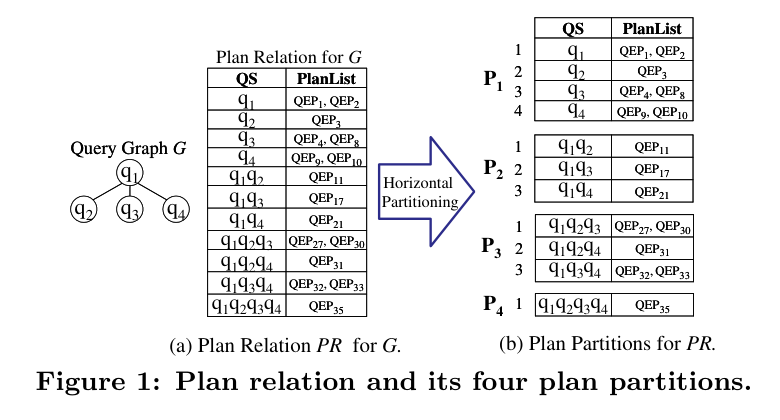
这个重述有两个直接收益：
到这里再看 ParallelDPEnum 就不突兀了。它不是另一个 join-order 算法，也不是替代 cost model 的模块，而是论文给“并行版 serial DP 顶层 driver”起的名字。可以把它和前一节的 SerialDPEnum 对齐看：
| 对象 | 它负责什么 | 和 MPJ 的关系 |
|---|---|---|
SerialDPEnum |
按 \(S=2..N\) 一层层构造 MEMO，层内用嵌套循环枚举 smallQS 和 largeQS。 |
还没有 MPJ 这个抽象；它只是直接跑双层/多层 loop。 |
MultiplePlanJoin |
把“构造某个 \(P_S\)”看成若干 plan partitions 之间的 join，例如 \(P_1 \Join P_3\)、\(P_2 \Join P_2\)。 | 这是每一层内部真正可以切分给线程的工作单元。 |
ParallelDPEnum |
仍按 \(S=2..N\) 推进，但每一层先调用 AllocateSearchSpace，把该层的 MPJ search space 分给多个线程。 |
它是外层调度器：负责分配 MPJ、等待线程、合并和 prune 结果。 |
所以 Algorithm 2 可以读成一句话：保留 Serial DP 的层级顺序，把每一层内部的 candidate pair 枚举改成并行执行的 MPJ。层与层之间仍然不能乱序，因为 \(P_S\) 依赖更小的 \(P_i\)；但同一层里，不同 candidate pair 的输入都已经在更小层算好，因此可以并行。
ParallelDPEnum 的高层流程因此是：
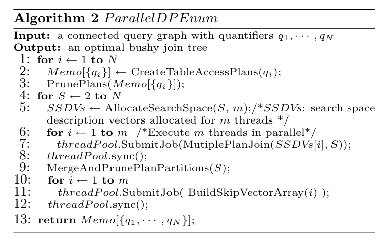
for S = 2..N:
SSDVs = AllocateSearchSpace(S, m)
parallel for each thread i:
MultiplePlanJoin(SSDVs[i], S)
sync
MergeAndPrunePlanPartitions(S)
parallel BuildSkipVectorArray for partitions just built这里的 SSDV 是 Search Space Description Vector，用来描述某个线程要处理哪一段 MPJ search space。读论文时不必陷入每个 index 字段的细节；它的作用就是把“线程负责哪段 outer/inner partition 或 sub-partition pair”描述清楚。
一旦把 \(P_S\) 的构造看成 MPJ，问题就变成：怎样把 MPJ 的 search space 切给线程，才能让每个线程处理的真实工作量接近？
原文先给一个反例。看似把 pair 数量均分给两个线程，thread 1 有 10 个 pair，thread 2 有 11 个 pair；但 thread 2 的 pair 全部会被 disjoint filter 丢掉，所以它不会调用 CreateJoinPlans。这就是"pair 数均衡不等于工作量均衡"。
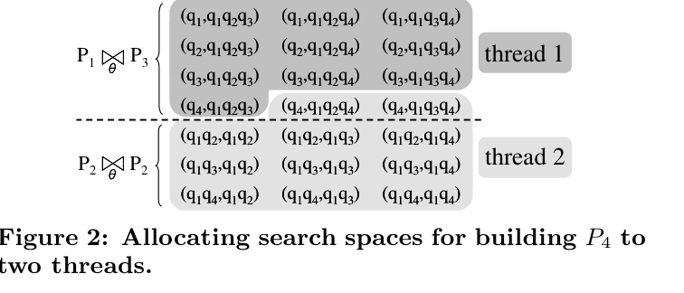
构造 \(P_S\) 的搜索空间就是一组 plan join 的总和：
论文管每一个单独的 \(P_{smallSZ} \Join P_{largeSZ}\) 叫一个 stratum（层）。假设我们要构造 \(P_4\)，搜索空间就是两个 stratum：
Stratum 1: P₁ ⋈ P₃ （小=1，大=3）
Stratum 2: P₂ ⋈ P₂ （小=2，大=2）每个 stratum 内部是一个嵌套循环：逐个取 outer partition 里的每一行，再和 inner partition 里的所有行配对。所以"切搜索空间"就是：在整个嵌套循环的迭代空间里，决定"哪个线程跑哪些外层/内层坐标"。四种 allocation scheme 的区别就是切割策略不同。
下面用一个具体例子说明。假设：
P₁ 有 4 行: [A, B, C, D] （4 个单表）
P₂ 有 3 行: [AB, AC, AD] （3 个两表 join）
P₃ 有 3 行: [ABC, ABD, ACD] （3 个三表 join）
m = 2 个线程先算搜索空间有多大：
Stratum P₁⋈P₃: 4 × 3 = 12 个 pair
Stratum P₂⋈P₂: 3 × 3 = 9 个 pair （自连接，NoInnerPreceding 优化后剩约一半，但 total sum 用原始大小算）
总共 ≈ 21 个 pair2 个线程，人均约 10~11 个 pair。切法是在嵌套循环的线性化序列上画一条线：
P₁⋈P₃ 的迭代顺序（outer=A,B,C,D，每次扫全部 inner）：
outer=A: (A,ABC) (A,ABD) (A,ACD) ← 3 个
outer=B: (B,ABC) (B,ABD) (B,ACD) ← 3 个
outer=C: (C,ABC) (C,ABD) (C,ACD) ← 3 个 ← Thread 1 到此停了（前 10 个）
outer=D: (D,ABC) (D,ABD) (D,ACD) ← 2 个 ← Thread 1 的剩余 + 开始切给 Thread 2
Thread 1 共拿到: 3+3+3+2 = 11 个 pair
P₂⋈P₂ 的迭代顺序：
outer=AB: (AB,AC) (AB,AD) ← Thread 2 继续
outer=AC: (AC,AB) (AC,AD)
outer=AD: (AD,AB) (AD,AC)
Thread 2 共拿到: 2(刚才P₁⋈P₃剩的) + 9 = 11 个 pair问题：Total sum 不区分不同 stratum 的"有效密度"。假设 P₁⋈P₃ 里 outer=D 的那 2 个 pair 全部 overlap（disjoint filter 不通过），那 Thread 1 实际上只做了 9 个 pair 的有效工作；Thread 2 的 P₂⋈P₂ 部分如果有效密度高，Thread 2 的有效工作量可能远超 Thread 1。这就是 Figure 2 展示的反例。
对上例：
Stratum P₁⋈P₃: outer P₁ 有 4 行 → 每个线程分 2 行
Thread 1: outer=[A,B]，各自扫全部 inner(ABC,ABD,ACD) → 2×3 = 6 个 pair
Thread 2: outer=[C,D]，各自扫全部 inner → 2×3 = 6 个 pair
Stratum P₂⋈P₂: outer P₂ 有 3 行 → 分不平，一个线程 2 行，一个 1 行
Thread 1: outer=[AB,AC]，各自扫 inner → 6 个 pair
Thread 2: outer=[AD]，扫 inner → 3 个 pair相比 total sum 的改进：每个 stratum 各自独立切，不会出现"一个 stratum 的尾巴和另一个 stratum 的头混在一起"的问题。
仍有问题：outer 的连续区间里如果"有效行"分布不均匀，也会失衡。比如 outer=[A,B] 这连续两行可能都会产生大量 CreateJoinPlans，而 outer=[C,D] 这两行大部分 pair 会被 filter 丢掉——equi-depth 对此无能为力，因为它切的是行数，不是有效工作量。
k mod m。不再是连续区间，而是交替分发。
对上例：
Stratum P₁⋈P₃: outer P₁ = [A, B, C, D]
第0行 A → Thread 1
第1行 B → Thread 2
第2行 C → Thread 1
第3行 D → Thread 2
Thread 1 负责 outer=[A,C]，各自扫全部 inner → 6 个 pair
Thread 2 负责 outer=[B,D]，各自扫全部 inner → 6 个 pair
Stratum P₂⋈P₂: outer P₂ = [AB, AC, AD]
第0行 AB → Thread 1
第1行 AC → Thread 2
第2行 AD → Thread 1
Thread 1 负责 outer=[AB,AD] → 6 个 pair
Thread 2 负责 outer=[AC] → 3 个 pair和 equi-depth 的区别：equi-depth 分到的是 outer 的连续区间[A,B] vs [C,D]；round-robin outer 把 outer 行交替分发。如果连续区间上有局部偏斜（比如 star query 的 hub 表集中在某个连续区域），round-robin outer 可以把偏斜打散。
仍有问题：如果 outer 行数很少且不能被 m 整除，某些线程会多分到一行 outer——在 star query 中，多出的那一行如果恰好是 hub，就会导致该线程的工作量远超其他线程。
j mod m"来轮转。
这是四种方案里最激进的一种。还是看例子：
Stratum P₁⋈P₃: inner P₃ = [ABC, ABD, ACD]
第0个 inner ABC → Thread 1
第1个 inner ABD → Thread 2
第2个 inner ACD → Thread 1
Stratum P₂⋈P₂: inner P₂ = [AB, AC, AD]
第0个 inner AB → Thread 1
第1个 inner AC → Thread 2
第2个 inner AD → Thread 1对 P₁⋈P₃，每个线程的遍历范围是：
Thread 1:
outer=A → 检查 inner ABC、ACD（跳过 ABD，因为它属于 Thread 2）
outer=B → 检查 inner ABC、ACD
outer=C → 检查 inner ABC、ACD
outer=D → 检查 inner ABC、ACD
→ 4 outer × 2 inner = 8 个 pair
Thread 2:
outer=A → 检查 inner ABD
outer=B → 检查 inner ABD
outer=C → 检查 inner ABD
outer=D → 检查 inner ABD
→ 4 outer × 1 inner = 4 个 pair为什么它最稳：它的效果等价于"把所有 join pair 随机打散后均分"。每个线程都在扫全部 outer 行，因此 outer 侧的局部偏斜被平均化了；inner 侧的分配也是交替的。论文实验中的 round-robin inner 最接近理论最优负载均衡。
代价：每个线程都要遍历全部 outer 行（不像 equi-depth 和 round-robin outer 那样只扫一部分），所以总内存访问量更大。但在共享内存多核 CPU 上，这个代价通常可接受。
| 策略 | 切分方式 | 线程扫 outer | 线程扫 inner | 适用场景 |
|---|---|---|---|---|
| Total sum | 全部搜索空间线性均分 | 部分 | 全部 | 各 stratum 有效密度接近时勉强可用 |
| Equi-depth | 按 stratum 分开，outer 连续区间均分 | 部分 | 全部 | outer 连续区间上 CreateJoinPlans 分布均匀时 |
| Round-robin outer | 按 stratum 分开，outer 行轮转分配 | 部分 | 全部 | outer 有局部偏斜但行数够多、能被 m 整除时 |
| Round-robin inner | 按 stratum 分开，inner 行轮转分配 | 全部 | 部分 | 任何拓扑；论文里最稳的默认选择 |
Basic MPJ 本身采用 cache-conscious 的 block nested-loop join。论文指出，传统 DB2/PostgreSQL 风格的 join enumerator 更像 tuple-based nested loop；而 MPJ 把 plan partition 存为数组，并按 block 访问 inner partition，能更好利用 CPU cache。
在 Basic MPJ 中，每个 candidate pair 仍然会经历：
if outer.QS overlaps inner.QS:
continue
if outer.QS not connected to inner.QS:
continue
CreateJoinPlans(outer, inner)
PrunePlans(P_S, ResultingPlans)所以 §4 解决的是 怎么把工作分给线程，但还没有解决 怎么少看那些必然失败的 pair。这个问题留给 §5 的 Skip Vector Array。
Basic MPJ 的主要浪费来自 disjoint filter。对于 star query，论文专门画了一个趋势图：随着 quantifier 数增加，disjoint filter 调用次数指数上升，而 filter selectivity 指数下降。换句话说，检查越来越多，但通过的比例越来越低。
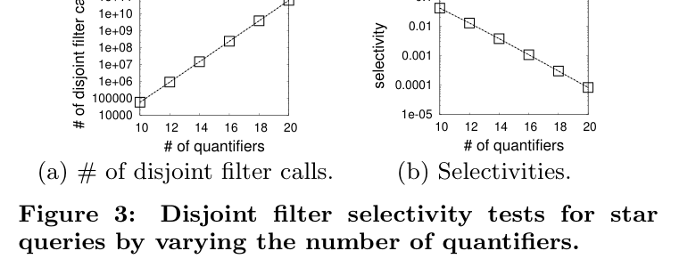
Skip Vector Array 的基本思路是利用两个事实：
对 plan partition 中每一行 \(P_S[i]\)，论文为它的 quantifier set 构建一个 skip vector。直观地说，如果当前候选 pair 在某个 quantifier 上 overlap，那么 skip vector 告诉我们：可以直接跳到 partition 里第一行“不再含这个 quantifier”的位置。于是算法不是一个个 pair 调用 disjoint filter，而是成段跳过必然 overlap 的候选。
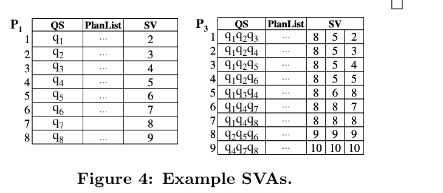
原文给出的构建复杂度是：
这里 \(S\) 是 quantifier set size。构建方式是从 partition 末尾向前扫，因为后一行的 skip 信息可以复用。只要 quantifier 总数固定，构建每个 skip vector 的成本与 set size 成正比。
为了把 SVA 和并行分配结合起来，论文又把 plan partition 划成 sub-partitions。Basic MPJ 的 allocation unit 是 tuple pair；Enhanced MPJ with SVA 的 allocation unit 变成 sub-partition pair。
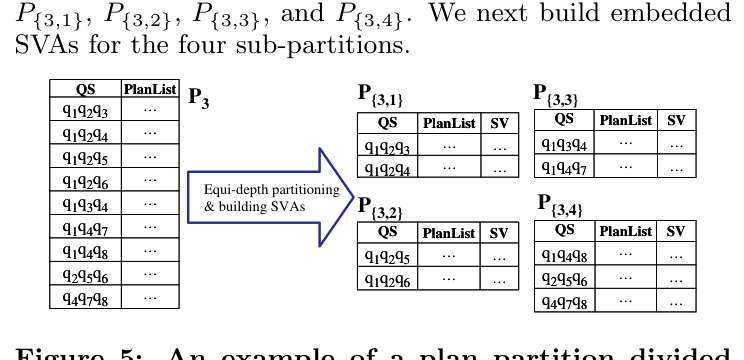
Skip Vector Join（SVJ）是 Enhanced MPJ 的核心 subroutine。它递归或迭代地比较两个 sub-partition 的当前位置：
CreateJoinPlans，然后继续探索剩余范围。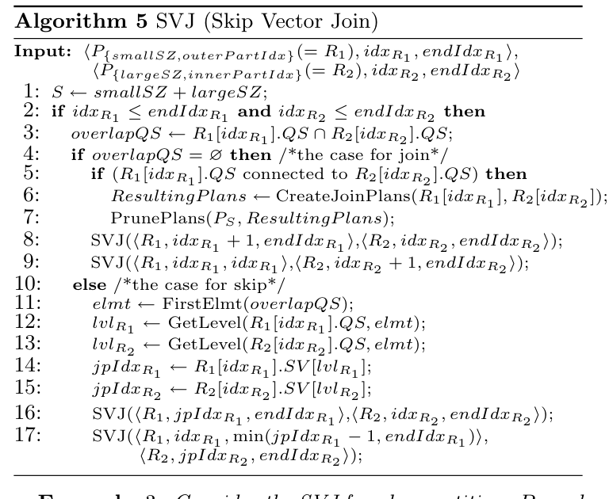
这节最值得留下的判断是：
SVA 不是更快地判断两个 set 是否 disjoint，而是尽量避免去看那些显然不会 disjoint 的 set。
这和 DPccp/MPDP 的思路有微妙差异。DPccp 是从图结构出发，直接生成合法 ccp；SVA 仍在 generate-and-filter 框架内，但给 filter 前面加了“跳表式”的剪枝索引。它的工程优势是：不用推翻已有 MEMO/DP 架构，只需要在 plan partition 上加辅助结构。
§6 形式化分析不同 query graph topology 下，各 allocation scheme 为什么产生不同的 CreateJoinPlans 调用分布。论文选择四种代表性拓扑：linear、cycle、star、clique。
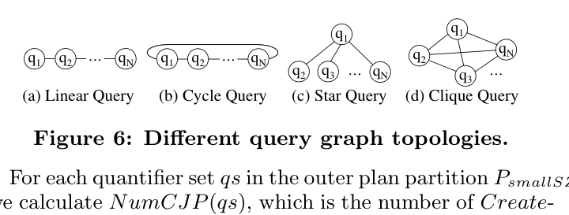
论文定义 \(NumCJP(qs)\)：对于 outer plan partition 中某个 quantifier set \(qs\)，它会触发多少次 CreateJoinPlans。这个数量取决于两个条件：inner set 要和 \(qs\) disjoint，并且两边在 query graph 上 connected。
| 拓扑 | 论文分析的核心结论 | 对 allocation 的影响 |
|---|---|---|
| Linear | 一个连续区间两侧最多各有一个可连接的 largeQS，因此 \(NumCJP\) 只会落在 0、1、2 几种情况。 | equi-depth 因为切连续区间，可能分到不同 case；round-robin 更容易打散。 |
| Cycle | 除了构造完整 \(S=N\) 时，每个位置通常有两个方向可连接。 | 各 allocation scheme 的调用分布差异较小。 |
| Star | hub relation 决定大量 pair 是否有效。若 outer set 已包含 hub 或 size 大于 1，很多组合会 overlap 或不可用。 | 负载高度偏斜。round-robin inner 最稳，因为它对每个 outer 更均匀地分 inner tuples。 |
| Clique | 任意两个不相交 set 都 connected，因此主要问题变成组合数本身。 | 除 total sum 外，各 scheme 通常接近；因为 connectivity 不再造成额外偏斜。 |
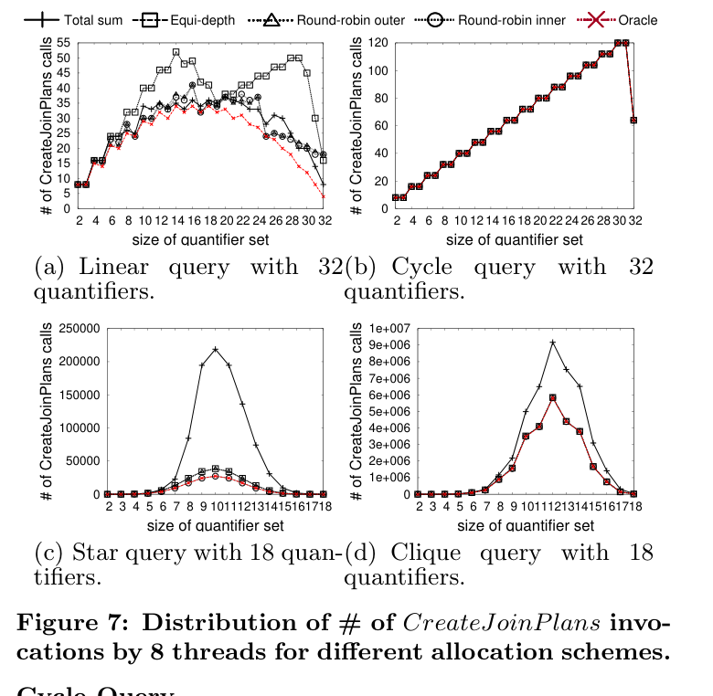
CreateJoinPlans 调用数。读图重点是 star 中 total sum / equi-depth / round-robin outer 的偏斜，以及 round-robin inner 接近 oracle。这一节有一个很实用的启示：优化器里的并行调度不能只按“枚举空间大小”估算负载。因为很多 candidate 的真实成本不是固定的，取决于它会在 disjoint filter、connectivity filter 还是 CreateJoinPlans 停下。拓扑越不均匀，越需要把“有效 pair 的分布”打散。
实验目标有两个：第一，证明并行算法显著快于传统 serial DP；第二，证明 basic MPJ 和 enhanced MPJ 在不同线程数和 quantifier 数下都能接近线性加速。
实验环境是 Windows Vista PC，双 Intel Xeon Quad Core E5310 1.6GHz，共 8 cores，8GB 内存；原型实现基于 PostgreSQL 8.3。论文主要展示 star 和 clique，因为 linear/cycle 的 plan partition 往往太小，不容易从并行中获益。
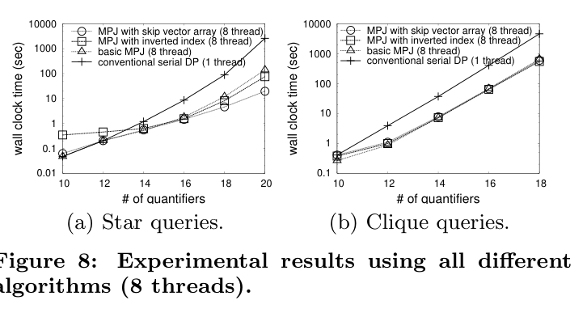
CreateJoinPlans，几种并行算法差异较小。原文给出几个关键数字：
CreateJoinPlans，而不是 disjoint filter。这些数字容易让人兴奋，但要读得精确：SVA 的巨大收益主要发生在 star/snowflake 这类有大量 overlap 失败候选的场景。对于 clique，任意 disjoint set 都 connected，SVA 能减少的无效 disjoint check 并不是主要矛盾。
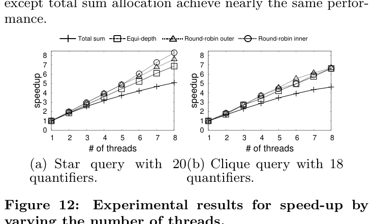
Basic MPJ 的结论是：round-robin inner 最稳。star query 上，20 个 quantifier 时 round-robin inner 达到 8.3 倍 speed-up，论文认为这还受益于 cache effect；clique query 的最高 speed-up 约为 7，受 CreateJoinPlans 中内存分配和 cache contention 影响。
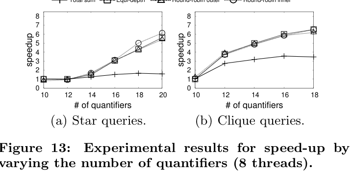
CreateJoinPlans。SVA 把 disjoint filter 调用降到接近理论下界后，新的瓶颈开始出现。原文指出 star query 上 merge results 约占整体时间 5%，因此 round-robin inner 的 speed-up 是 6.1 倍，而不是继续贴近 8 倍。对 total sum 来说，8 线程下只有 3.46 倍，因为在 SVA 之后，性能更依赖 CreateJoinPlans 调用数，而 total sum 对这个真实工作量分布不够敏感。
论文也报告了内存占用：PostgreSQL 原型中，20 个 quantifier 的 star query 约用 714MB，18 个 quantifier 的 clique query 约用 1.47GB。作者认为这部分与 PostgreSQL 使用 linked-list 表示 join predicates、residual predicates、projected columns 有关；如果换成商业优化器常见的 bitmap set 表示，star 20 可以降到约 520MB，clique 18 可以降到约 640MB。
相关工作部分主要把论文和四类路线区分开：
| 路线 | 代表 | 论文的区分点 |
|---|---|---|
| Approximate / randomized search | Tabu search、iterative improvement、simulated annealing、genetic algorithm。 | 这些方法减少 search space，但可能产生 sub-optimal plans；本文完整探索 DP search space。 |
| Generic parallel DP | 字符串编辑、背包、生物信息 DP 等。 | 很多通用 DP 只依赖固定前几层，join enumeration 是 non-serial polyadic DP，不能直接套。 |
| Set joins | similarity / containment / overlap join。 | 已有 set join 多处理 overlap、similarity；MPJ 需要高效找到 disjoint sets。SVA 是为这个目标定制。 |
| DPccp / DPhyp | Moerkotte & Neumann 的 graph traversal 枚举。 | DPccp 直接生成 disjoint connected pair，能减少无效枚举；但原文认为 DPccp 的生成顺序不是按 size partition 推进，依赖关系使其不容易被本文框架“干净地”并行化。 |
这里和 MPDP 的关系尤其值得注意。VLDB 2008 的说法是：DPccp 把不必要的 disjoint filter 调用降到理论最小，但不天然适合它们这种按 plan partition size 分层的 parallel framework。SIGMOD 2022 的 MPDP 后来正是在“少枚举”和“高并行”之间重新设计了候选生成器，并进一步考虑 GPU 批处理。
结论部分重申：本文通过 MPJ、search-space allocation 和 SVA，第一次系统探索了 parallelizing query optimization 过程本身。作者认为这能把需要启发式优化的边界往后推，使一些超过 12 张表的复杂 OLAP ad-hoc queries 仍能用 DP 找 optimal plans。
未来工作包括：并行化 DPccp、top-down optimizer，以及在同等时间预算下比较 randomized approach 和 parallel DP approach 的 plan quality。
CreateJoinPlans 调用和无法跳过的 filter 成本。如果把它转成 demo 里的实现启发，可以分三层：
| 层次 | 可展示点 | 适合做成什么功能 |
|---|---|---|
| DP 层次并行 | 按 set size 推进，每一层内部的 candidate generation 可以并行。 | 展示 DP memo 的 level-by-level workflow，而不是单线程递归。 |
| Allocation | 不同拓扑下，pair 数与有效 join 数的差异。 | 可视化每个线程拿到的 candidate pairs、通过 filter 的 pairs、最终 CreateJoinPlans 数。 |
| SVA / skipping | 在 lexicographic sorted subsets 上跳过 overlap ranges。 | 作为 DPSUB generate-and-filter 的优化对照，不必一开始就实现完整工业版。 |
| 原文对象 | 本文位置 | 作用 |
|---|---|---|
| Algorithm 2 ParallelDPEnum | §4 | 展示并行 DP 的层级结构：分配、并行 MPJ、同步、merge/prune、构建 SVA。 |
| Figure 1 Plan relation and plan partitions | §4 | 解释 MEMO 如何被看成 PlanRelation，并按 quantifier set size 切成 \(P_i\)。 |
| Figure 2 Search space allocation | §5 | 说明 pair 数均衡不等于真实工作量均衡。 |
| Figure 3 Disjoint filter selectivity | §6 | 解释 star query 中 SVA 的必要性。 |
| Figure 4 / Figure 5 SVA | §6 | 展示 skip vector 和 partitioned SVA 的结构。 |
| Algorithm 5 SVJ | §6 | 展示 skip case 如何跳过 overlap range。 |
| Figure 6 / Figure 7 Topology analysis | §7 | 解释 topology 如何影响 CreateJoinPlans 的线程分布。 |
| Figure 8 / Figure 12 / Figure 13 Experiments | §8 | 展示整体性能、basic MPJ 线程加速、enhanced MPJ with SVA 的加速形态。 |
CreateJoinPlans，不是 raw candidate pair 数。CreateJoinPlans。注：本文所有英文术语尽量保留论文原词，例如 quantifier set、plan partition、Multiple Plan Join、Skip Vector Array、CreateJoinPlans，方便和原文及优化器实现对照。